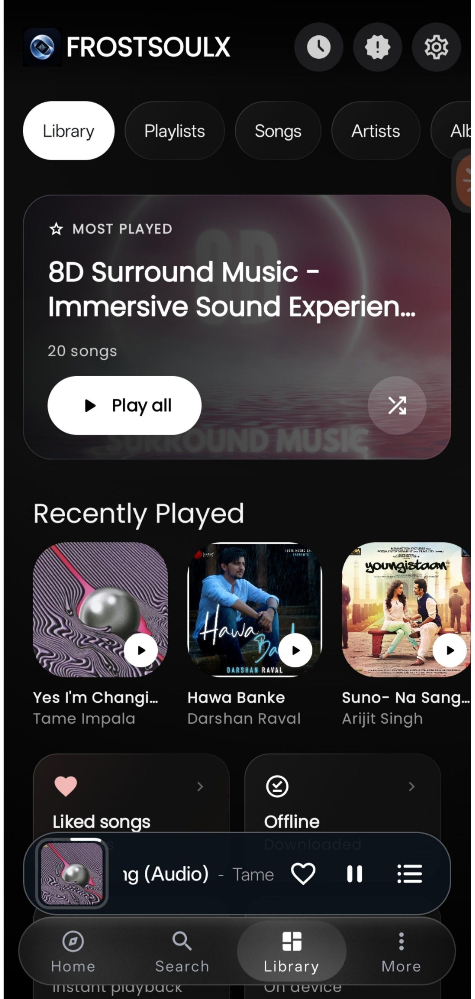
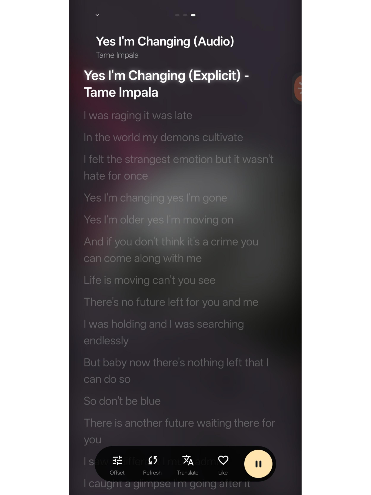
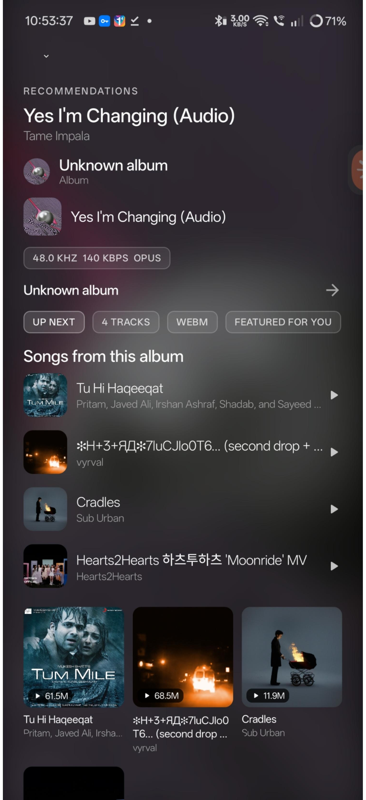

◉
Artwork in focus
Album art leads the player, with rich dark surfaces and a color-conscious visual identity.
An artwork-first listening space for the music you love. Play your local library, follow synchronized lyrics, discover your next track, and explore experimental immersive audio, all in one considered player.
Android · Open source · Built for listeners

Less time fighting menus, more time inside the music. FrostSoulX brings playback, discovery, lyrics, and audio experimentation into a single Android experience.
Album art leads the player, with rich dark surfaces and a color-conscious visual identity.
Play tracks stored on your device and move between songs, albums, artists, and playlists.
Time-synchronized lyrics help keep the words and the music in step.
Explore quick picks, listening history, and contextual music recommendations.
A compact mini-player and accessible controls keep listening close while you browse.
Experimental room responses and spatial processing offer another way to shape playback.
Real screens from the app, from the immersive player to lyrics, browsing, and recommendations.





Tap a screenshot to view it at full size.
FrostSoulX explores immersive processing, custom room responses, spatial movement, and stereo bass controls. This part of the app is experimental: the effect and performance can vary by device, headphones, and selected response. Standard playback remains the fallback when you want the original stereo presentation.
Explore the audio work ↗Explore the source, check what is available, and follow the project as the player evolves.